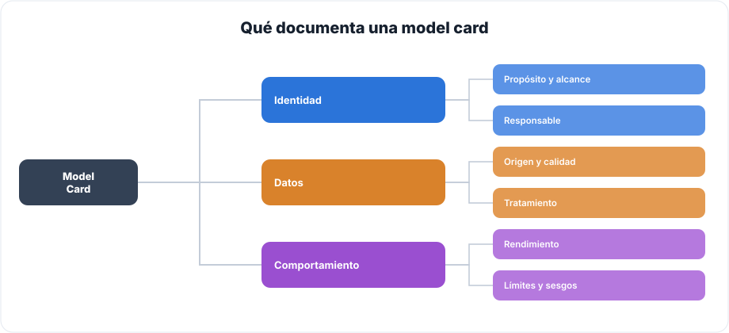
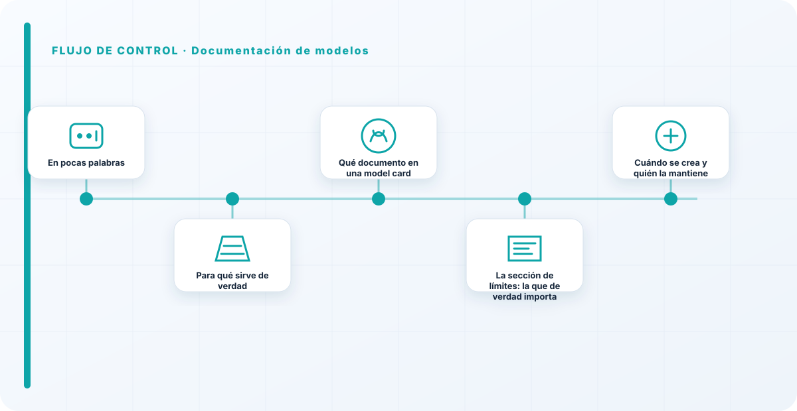
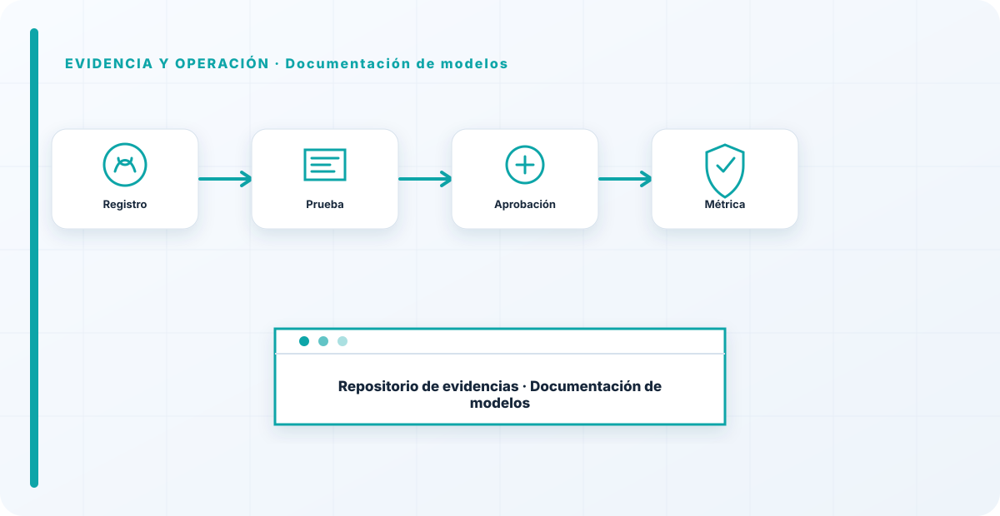

En pocas palabras
Una model card es la ficha de identidad de un modelo: qué hace, con qué datos se entrenó, cómo rinde, dónde falla y quién responde por él. Suena a papeleo y no lo es en absoluto: es lo que permite que otra persona —una auditoría, un equipo que hereda el sistema, o tú mismo dentro de un año— entienda un modelo sin tener que reconstruirlo de memoria ni rezar para que quien lo hizo siga en la empresa. Un modelo sin model card es una caja negra con dueño desconocido, y las cajas negras no se gobiernan, se sufren.
Para qué sirve de verdad
La documentación de modelos resuelve un problema muy concreto y muy caro: el conocimiento que vive solo en la cabeza de quien construyó el modelo. Esa persona se va, cambia de equipo, o sencillamente olvida los detalles con el tiempo, y entonces nadie sabe por qué el modelo hace lo que hace, con qué datos aprendió, ni dónde son fiables sus respuestas y dónde no. La model card fija ese conocimiento en un sitio donde no depende de una memoria concreta. Es la diferencia entre un activo de la organización y un truco personal de un empleado.
Y hay una segunda razón, muy práctica: el cumplimiento. El AI Act exige documentación técnica para los sistemas de alto riesgo, y una model card bien hecha es, directamente, buena parte de esa evidencia. Así que documentar no es solo higiene interna; es preparar por adelantado lo que un auditor o un regulador te va a pedir. Hacerlo con el modelo cuesta poco; reconstruirlo a posteriori, cuando llega la auditoría, cuesta muchísimo.
Qué documento en una model card
No relleno un formulario ciego; documento lo que de verdad hace falta para entender y gobernar el modelo, agrupado en tres bloques:

La identidad —propósito, alcance y responsable— responde a "qué es esto y quién manda". Los datos —origen, calidad y tratamiento— responden a "de qué está hecho", que es de donde vienen la mitad de los problemas de sesgo y legales. Y el comportamiento —rendimiento, límites y sesgos conocidos— responde a "en qué me puedo fiar y en qué no". Cada bloque es corto, pero si falta uno, la ficha tiene un agujero por el que se cuela un uso indebido del modelo.

La sección de límites: la que de verdad importa
Si tuviera que quedarme con una sola parte de la model card, me quedo sin dudarlo con la de límites y sesgos conocidos. Y es, casualmente, la que casi todo el mundo escribe con desgana o directamente omite. Todo el mundo documenta encantado lo que el modelo hace bien —los números buenos, los casos de éxito—; casi nadie escribe con honestidad dónde falla. Y es exactamente al revés de lo que necesito: lo que me permite usar un modelo con seguridad no es saber lo que acierta, es saber dónde y cómo se equivoca.
Un ejemplo: un modelo que clasifica solicitudes funciona estupendamente con casos habituales pero se desorienta con los raros. Si eso está documentado, quien lo use sabe que los casos límite necesitan revisión humana. Si no está documentado, alguien confiará ciegamente en el modelo justo donde no debe, y el fallo llegará por sorpresa. Una model card que solo cuenta las virtudes no es documentación, es marketing, y el marketing no protege a nadie.
Cuándo se crea y quién la mantiene
La model card no se escribe al final, corriendo, para la auditoría; se crea con el modelo y se actualiza cada vez que el modelo cambia —un reentrenamiento, una nueva fuente de datos, un cambio de uso—. El propietario del modelo es quien la mantiene, igual que mantiene el modelo: son la misma responsabilidad. Una model card congelada mientras el modelo evoluciona no solo queda obsoleta, es que miente, y una documentación que miente es peor que ninguna, porque genera confianza falsa. Por eso la ligo al ciclo de vida del modelo: cada versión nueva, model card actualizada.
La sección que separa una model card útil de un trámite es la de límites y sesgos conocidos. Lo que necesito para usar un modelo con cabeza no es lo que acierta, es dónde y cómo se equivoca. Una model card sin límites es marketing con membrete técnico. Y un modelo cuyos límites nadie ha escrito es un modelo en el que alguien va a confiar de más, justo donde no debe. Documentar honestamente las debilidades no es reconocer un fracaso; es lo que hace el modelo utilizable.
Los errores que veo una y otra vez
- Documentar solo lo bueno y omitir límites y sesgos.
- Escribirla al final para la auditoría, en vez de con el modelo.
- Dejarla congelada mientras el modelo se reentrena y cambia.
- Documentación tan técnica que no la entiende quien tiene que decidir.
- Una model card sin responsable, que por tanto nadie mantiene.
- Confiar en un modelo cuyos límites nadie ha escrito.
Cómo lo llevaría a un entorno real
Cuando aterrizo documentación de modelos en una organización, no empiezo por comprar una herramienta ni por redactar veinte páginas. Empiezo por dibujar qué ocurre hoy: quién solicita el cambio, quién lo aprueba, qué sistemas intervienen, qué datos cruzan el proceso y quién se entera cuando algo falla. Ese dibujo suele descubrir más problemas que cualquier checklist. En gobierno de modelos, lo peligroso no es solo carecer de controles; también lo es creer que existen porque alguien los escribió una vez.
Después separo lo imprescindible de lo deseable. Lo imprescindible debe poder comprobarse: un responsable identificado, una regla clara, una evidencia fechada y un mecanismo para reaccionar. En este caso revisaría especialmente modelo, versión y dataset. No me vale una respuesta del tipo «lo gestiona el proveedor» o «eso lo mira seguridad». Necesito saber qué persona toma la decisión, con qué información y dentro de qué plazo.
La implantación debe crecer con el riesgo. Un piloto interno puede funcionar con una ficha breve y una revisión manual. Un sistema que afecta a clientes, empleados, dinero o información sensible necesita segregación de funciones, pruebas independientes, monitorización y un expediente mantenido. Mi criterio es sencillo: cuanto más difícil sea deshacer el daño, más fuerte debe ser la barrera antes de producción.
Decisiones que deben quedar por escrito
Hay decisiones que no deberían vivir en una reunión ni en un mensaje de chat. Para documentación de modelos dejaría documentados el alcance, los supuestos, los límites de uso, las excepciones aceptadas y las condiciones que obligan a detener o reevaluar. El documento no tiene que ser enorme, pero sí debe permitir que otra persona entienda por qué se hizo lo que se hizo.
También registraría quién puede cambiar evaluación, quién valida drift y quién recibe las alertas relacionadas con criterios de aceptación. Cuando esas tres responsabilidades se mezclan, aparece el clásico problema: el mismo equipo construye, aprueba y declara que todo funciona. No siempre se puede separar por completo, sobre todo en organizaciones pequeñas, pero al menos debe existir una revisión por alguien que no dependa del éxito inmediato del despliegue.
Las excepciones merecen un tratamiento propio. Una excepción sin fecha de caducidad acaba convirtiéndose en la arquitectura real. Por eso exigiría motivo, riesgo aceptado, responsable, compensaciones, fecha de revisión y criterio de cierre. Si falta uno de esos elementos, no es una excepción gestionada; es una deuda invisible.

Un ejemplo práctico
Imaginemos que un equipo quiere incorporar documentación de modelos a un servicio que ya está en producción. La propuesta promete reducir tiempos y automatizar tareas, pero utiliza componentes que cambian con frecuencia. Antes de aprobarlo, pediría una prueba limitada, un inventario de dependencias, un flujo de datos y una definición clara de qué acciones quedan fuera del alcance.
Durante la prueba recogería resultados normales y casos límite. No solo miraría si funciona; comprobaría qué ocurre cuando faltan datos, cambia una versión, se pierde conectividad, llega una entrada manipulada o un usuario intenta superar sus permisos. Ahí es donde se ve si el diseño aguanta. En muchas pruebas felices todo parece seguro porque nadie ha intentado romper la hipótesis de partida.
Si los resultados son aceptables, la salida a producción tendría condiciones: versión fijada, configuración aprobada, logs disponibles, responsables de guardia, procedimiento de rollback y revisión tras las primeras semanas. Si alguno de esos elementos no existe, prefiero retrasar el despliegue. Un día de demora suele ser más barato que investigar después un comportamiento que nadie puede reconstruir.
Qué evidencias guardaría
Para demostrar que el control funciona conservaría evidencias que cuenten una historia completa, no capturas sueltas. La historia debe enlazar necesidad, decisión, implementación, prueba y operación. En documentación de modelos eso incluye como mínimo la ficha del activo, el diagrama vigente, la configuración aprobada, el resultado de las pruebas y el registro de cambios.
No guardaría información por acumular. Si los logs contienen prompts, documentos, datos personales o secretos, aplicaría minimización, control de acceso y retención. La evidencia debe ayudar a investigar y auditar sin crear una segunda fuga de información. Es frecuente endurecer el sistema principal y dejar un repositorio de evidencias abierto a demasiadas personas.
- Propietario y finalidad de documentación de modelos, con fecha de revisión.
- Inventario de modelo, versión y dependencias asociadas.
- Criterios de aceptación y resultados sobre dataset y evaluación.
- Configuración efectiva, versión y aprobación del cambio.
- Alertas, incidentes, excepciones y acciones correctivas cerradas.
Señales de que el control no está funcionando
El primer síntoma es que nadie sabe responder con rapidez quién es el responsable. El segundo es que la documentación describe una versión distinta de la que está operando. El tercero es que las alertas existen, pero llegan a un buzón que nadie revisa. Cuando aparecen esos tres síntomas, el problema no es tecnológico: el control se ha desconectado de la operación.
También desconfío de las métricas demasiado perfectas. Cero incidentes, cero excepciones y cien por cien de cumplimiento pueden significar excelencia, pero con frecuencia significan que no estamos mirando. Prefiero indicadores que enseñen tendencia: tiempo de corrección, antigüedad de excepciones, cobertura de pruebas, cambios sin revisión y reincidencias.
Por último, revisaría el comportamiento después de cada cambio significativo. En IA, una actualización de modelo, dataset, prompt, herramienta, permiso o proveedor puede alterar el riesgo sin cambiar el nombre del servicio. Si el proceso solo reevalúa cuando se crea un proyecto nuevo, se quedará ciego durante la mayor parte de la vida útil.
Mi criterio de cierre
Considero que documentación de modelos está razonablemente controlado cuando el equipo puede explicar el proceso sin depender de una sola persona, reconstruir una decisión con evidencias y detener el servicio sin improvisar. No busco perfección documental; busco que la organización pueda tomar decisiones repetibles bajo presión.
El cierre no consiste en marcar todas las casillas. Consiste en demostrar que los riesgos relevantes tienen propietario, que los controles se prueban y que las desviaciones producen una acción. Si la evidencia no cambia ninguna decisión, probablemente estamos generando burocracia. Si una decisión importante no deja evidencia, estamos creando fragilidad.
Este enfoque es el que intento mantener en toda CyberLibrary AI: explicar el control de forma que lo entienda negocio, pero con suficiente profundidad para que arquitectura, seguridad, auditoría y operaciones puedan aplicarlo de verdad.
Referencias y marcos relacionados
Contenido educativo y técnico. No sustituye asesoramiento jurídico ni una auditoría formal.